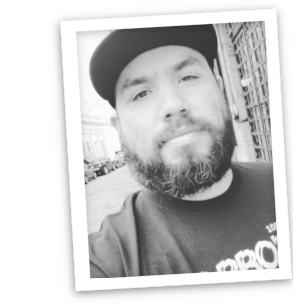

The lasts of the Webmaster era with knowledge of backend, frontend, and DevOps capabilities.
I like to write clean, tested, and concise code, and try to do that on my daily basis
- Education
-
Universidad de Guadalajara - Licenciatura en Informatica (Computer Science Bachelor)
Major: Software Engineer
Minor: Science and engineering
- Skills
-
Hard Skills
Ruby, Rails, Javascript, Python, GoLang, PostgreSQL, Redis, RabbitMQ, REST, SCIM, SAML, Git, Docker, Bash, Unix
Soft Skills
Integrity, Effective communication, Teamwork, Problem solving and Willingness to learn
- Experience
-
Software Engineer Symplr - Houston Texas, Remote - Mar 2023 - Jan 2024
- I was in charge of modifying/optimizing the codebase on Ruby. Creating/extending the specs on the application.
- Upgrade ruby and rails base applications with the latest versions, and create a Docker environment for new developers.
- Tackling complex queries, and adding cache strategies to eliminate bottle-necks with some APIs
- upgrading and maintaining all the services related to the application. I was helping the team to understand and change the application.
- Stack: Ruby, Rails, MySQL, Docker, Rspec, AngularJS, Typescript
Software Engineer Synack - San Francisco CA, Remote - Mar 2021 - Mar 2023
- I Write and maintain REST APIs using Rails for different services, communicating with broad non-rails services and keeping it clean and straightforward.
- I was in charge of writing a new feature called Credits Ledger. I was in the design, architecture, database design, and writing the implementation along with doing support to other developers as a tech lead.
- I wrote a Sendgrid python app to maintain the email templates using git and CI to avoid doing it manually.
- I was helping other developers to ramp up coding in the application and conduct major refactorings in some services, increasing the code coverage and tuning performance in complex SQL queries.
- Stack: Ruby, Rails, PostgreSQL, Docker, Rspec, Javascript, Python, GoLang
Software Engineer Michelada.io - Guadalajara, MX - Oct 2020 - Mar 2021
- Mainly working with several clients to support different Ruby/Rails architectural technologies and improving their code coverage, response times, cache management and queries performance issues along the way.
- Stack: Ruby, Rails, PostgreSQL, Docker, Rspec, Javascript
Software Engineer OneLogin, Inc - Guadalajara, MX - Aug 2015 - Apr 2020
- Integrating existing REST services from other IPs and several external services
- Supporting our SCIM structure to allow companies to be added into our app supporting catalog.
- Dockerizing some internal services.
- Applying in-house solutions to a better performance in authorizations and authentications
- Creating new Services from scratch, understanding the needs for our customers.
- Helping others to be successful in our team.
Ruby developer SerpicoDev - Phoenix, AR - Mar 2014 - Aug 2015
- I was in charge of create new features and resolve bugs along with the client SocialWhirled,
in order to expand a legacy app created on Rails 3. I had experience implementing some services on the servers,
and consume APIs for the platform when it was needed